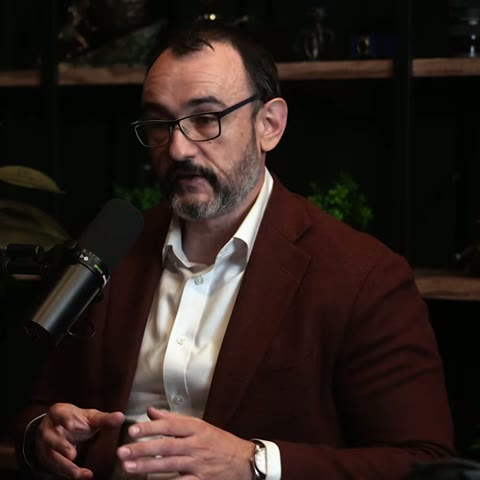

La guerre en Ukraine, 2026
Source : Lex Fridman Podcast #504, YouTube, mis en ligne le 10 novembre 2026. Durée 2 h 53. Invités : Michael Kofman et Preston Stewart. Transcription officielle.
Avertissement
- Ces notes reflètent la position des deux invités, pas celle de l'auteur ni de son employeur.
- Le sujet de la vidéo est militaire. Elle ne traite pas des conséquences humanitaires de la guerre.
- Les captures d'écran appartiennent au Lex Fridman Podcast. Elles sont reprises à seule fin de commentaire, chacune avec sa source et un lien vers le passage de la vidéo.
- Transparence : notes rédigées avec l'appui d'un modèle de langage, Claude (Anthropic, modèles Opus 5.5 et Fable 5.2), à partir de la transcription officielle et de la vidéo.
Les invités

Michael Kofman
Chercheur principal à la Fondation Carnegie pour la paix internationale, spécialiste des armées russe et ukrainienne. Il anime le podcast Russia Contingency et se rend auprès de brigades ukrainiennes. L'essentiel de l'analyse vient de lui.
Preston Stewart
Diplômé de West Point, l'académie militaire de l'armée de terre américaine, il a servi en Afghanistan. Il couvre la guerre sur sa chaîne YouTube et dans le podcast War and Conflict.
Portraits : captures du Lex Fridman Podcast #504, YouTube.
Points clés
- En 2026, l'armée ukrainienne connaît sa situation la plus favorable sur le terrain depuis l'été 2023, et l'armée russe sa plus difficile depuis l'hiver 2022-2023. La tendance s'est inversée à l'été ou à l'automne 2025. 1:18
- L'armée russe s'appuie de plus en plus sur le bombardement stratégique : des frappes sur les villes, l'énergie et les infrastructures civiles loin du front. Cette méthode a rarement suffi à atteindre des buts politiques étendus, surtout sans succès au sol. 2:26
- Les drones causent 80 % des pertes, mais ne suffiraient pas seuls à tenir le terrain. Ils s'ajoutent aux défenses préparées, aux champs de mines et à l'artillerie. 13:12
- Le front ne forme plus une ligne continue. Les drones frappent jusqu'à une quinzaine de kilomètres de part et d'autre, et une zone grise que personne ne tient sépare les deux armées. 11:57
- Sur ses cartes, l'armée russe se place 10 à 15 km en avant de ses positions réelles. Elle planifie ensuite d'après cette ligne, ce qui lui coûte des hommes. 1:38:03
- Les demandes du gouvernement russe n'ont presque pas changé depuis 2022 et dépassent ce que son armée peut prendre. Celles du gouvernement ukrainien s'alignent sur la ligne de front actuelle. 2:19:47
- Aucune paix n'est attendue à court terme. Des trêves partielles sont possibles. Un cessez-le-feu sans garanties de sécurité serait dangereux pour l'Ukraine. 2:36:26
Chaque horodatage ouvre la vidéo au passage qui fonde la phrase. Un clic agrandit les images. Les noms de lieux ukrainiens suivent la graphie des cartes de l'épisode, les noms russes l'usage français.
Chronologie retenue par l'épisode, 2022 à 2026
Principaux événements militaires retenus par l'épisode, février 2022 à octobre 2026
- Fév. à maiL'armée russe envahit l'Ukraine, prend Kherson et Mariupol
- AvrilL'armée ukrainienne reprend la région de Kyiv
- Sept. à nov.L'armée ukrainienne reprend Izium, puis Kherson
- OctobreL'armée russe commence ses frappes massives sur le réseau électrique
- MaiL'armée russe prend Bakhmut
- JuinL'armée ukrainienne lance sa contre-offensive d'été, qui échoue
- FévrierL'armée russe prend Avdiivka
- AoûtL'armée ukrainienne entre dans la région russe de Koursk
- MarsL'armée russe reprend l'essentiel du terrain perdu à Koursk
- JuinDes drones ukrainiens frappent des bases de bombardiers russes
- AoûtL'armée ukrainienne frappe les raffineries, le carburant manque dans une partie de la Russie
- HiverLes frappes russes privent de chauffage une grande partie de Kyiv
- Début d'annéeL'armée russe prend Pokrovsk et Huliaipole
- FévrierL'armée ukrainienne reprend du terrain au sud
- Mai à oct.L'armée ukrainienne reprend du terrain au nord de Lyman
Source. Frise de l'épisode, Lex Fridman Podcast #504, YouTube, 10 novembre 2026, capture à 1:20.Limite. Sélection faite par l'équipe du podcast, lue à l'écran. Les pertes civiles et les déplacements de population n'y figurent pas.
Où en est la guerre
1:02Sur le front, l'armée ukrainienne connaît sa situation la plus favorable depuis 2023. Loin du front, la campagne de frappes russe s'étend à de nouvelles cibles.
La guerre est dans sa cinquième année. Les combats ont lieu dans l'est et le sud-est du pays. Kyiv n'est pas menacée au sol, mais des drones et des missiles la visent chaque jour. 8:37
Le territoire tenu par l'armée russe, carte d'ouverture
Territoire tenu par l'armée russe, en rouge. En orange, les villes du front citées dans ces notes, de Kupiansk au nord à Huliaipole au sud.
Source. Lex Fridman Podcast #504, YouTube, 10 novembre 2026, capture à 1:12.Limite. L'écran cite DeepState et l'ISW et ne date pas la carte. Dans la zone grise, toute ligne est approximative.
L'effort russe porte sur le reste du Donbas, la région que forment les oblasts (provinces) de Luhansk et de Donetsk. Quatre villes de l'oblast de Donetsk restent sous contrôle ukrainien : Sloviansk, Kramatorsk, Druzhkivka et Kostiantynivka, que les soldats appellent « Kostya » parce que le nom est trop long. Au nord, vers Sumy et Kharkiv, l'armée russe mène des incursions limitées pour établir une zone tampon. 9:55
Fait nouveau en 2026, l'armée ukrainienne reprend du terrain. Elle mène deux offensives locales, l'une près de Lyman, l'autre dans la région de Zaporizhzhia. Certaines opérations récentes ont repris plus de terrain que la contre-offensive de l'été 2023. Celle-ci, préparée avec des unités formées et équipées par les pays occidentaux, avait échoué. 11:26
En 2026, l'armée ukrainienne reprend du terrain au nord de Lyman
Gains de 2026, russes en rouge vif, ukrainiens en bleu. Le contour blanc entoure la « ceinture de forteresses », les quatre villes du Donbas que l'armée russe n'a pas prises.
Source. Lex Fridman Podcast #504, YouTube, 10 novembre 2026, capture à 10:33.Limite. Carte de l'équipe du podcast, sans date précise ni source à l'écran.
L'armée russe a gardé l'initiative pendant l'essentiel de 2024 et de 2025, en menant une offensive d'usure sur un front très large. La tendance s'est inversée à l'automne 2025. Le graphique de l'épisode représente cette évolution mois par mois. 4:53
Terrain gagné et perdu chaque mois par l'armée russe
Terrain gagné (rouge) et perdu (turquoise), janvier 2023 à octobre 2026. Les pertes incluent le terrain passé en zone grise. L'épisode date l'inversion de l'automne 2025.
Source. Lex Fridman Podcast #504, YouTube, 10 novembre 2026, capture à 5:48.Limite. L'écran ne donne ni unité, ni échelle, ni source.
Loin du front, la campagne de frappes russe a commencé à l'automne 2022 contre les centrales, les postes électriques et les chaufferies. En 2026, elle vise aussi des entrepôts, des centres de données, des écoles, des établissements médicaux, des centres commerciaux et des trains. Des drones à réaction ont remplacé les drones à hélice, plus faciles à abattre. C'est un bombardement stratégique : il vise ce qui fait vivre l'économie et la population plutôt que les forces du front. Michael Kofman souligne que cette méthode a rarement suffi à atteindre des buts politiques étendus. L'issue de l'hiver reste incertaine pour les villes ukrainiennes. L'hiver est le plus dur pour la population civile, pas pour les troupes du front. 2:37:41 6:19
L'armée russe lance des milliers de drones chaque mois
Drones (rouge) et missiles (rose) lancés sur l'Ukraine chaque mois, janvier 2025 à octobre 2026, soit 120 300 au total selon l'écran. Carte : attaques ayant touché chaque oblast, janvier 2025 à juillet 2026.
Source. Lex Fridman Podcast #504, YouTube, 10 novembre 2026, capture à 2:40.Limite. Lancements rapportés, sans source nommée. La dernière barre, hachurée, porte la mention « Air Force monthly count ». Non vérifié ici.
Drones et zone grise
14:41Des postes isolés et des drones tiennent le front. Pour y avancer, l'armée russe envoie des hommes par petits groupes, au prix de pertes très lourdes.
L'armée ukrainienne ne tient pas une ligne continue. Elle tient souvent des postes de trois soldats, séparés de plusieurs centaines de mètres. 31:29 Les drones peuvent frapper jusqu'à une quinzaine de kilomètres de part et d'autre, distance variable selon les secteurs, dans une bande que les soldats appellent la kill zone. Entre les deux armées s'étend une zone grise que personne ne contrôle. 11:57
Le front : des postes de trois soldats, sans ligne continue
Postes d'infanterie (cercles) de part et d'autre d'une zone grise (hachures), sous la surveillance des drones.
Source. Lex Fridman Podcast #504, YouTube, 10 novembre 2026, capture à 12:04.Limite. Schéma simplifié de l'équipe du podcast. Il illustre un propos des invités et ne mesure rien.
Les drones causent 80 % des pertes, d'après les statistiques citées dans l'épisode. Ils ne suffiraient pas seuls : les champs de mines arrêtent les assauts, et l'artillerie oblige l'adversaire à se disperser et prend le relais par mauvais temps, quand les drones volent mal. 13:12
Le drone le plus visible dans les vidéos est le FPV (first-person view), un petit quadricoptère chargé d'explosif que son pilote dirige par la caméra embarquée jusqu'à l'impact. Chaque camp en emploie 8 000 à 10 000 par jour. Sauf rares cas de guidage automatique en fin de trajectoire, ils sont pilotés à distance par une équipe de deux ou trois personnes : un pilote, un navigateur et souvent un technicien. 17:37
Les vidéos publiées ne montrent que les frappes réussies. Une partie des drones est brouillée, tombe en panne ou n'explose pas. Une compagnie mécanisée ukrainienne qui part à l'assaut s'attend à recevoir près de 300 impacts. 22:55
Il faut plusieurs drones par cible
Nombre de drones FPV employés par cible, estimations données par les deux invités. Un carré représente un drone, un carré vide le haut de la fourchette
Source. Lex Fridman Podcast #504, YouTube, 10 novembre 2026, passage à 22:55.Limite. Estimations tirées de ce que les invités ont vu ou entendu auprès d'unités ukrainiennes. Aucune série de données.
Une colonne blindée est repérée à 10, 20 ou 30 km du front et détruite avant d'y arriver. L'armée russe envoie donc des hommes seuls ou par petits groupes, à pied, à moto, en quad, parfois en voiture civile. 25:18
Kofman parle d'un calcul sinistre. Dans son exemple, sept hommes sur dix n'atteignent pas les positions ukrainiennes, mais les trois autres ont trouvé un passage entre deux postes, que le groupe suivant emprunte. Trois à cinq kilomètres plus loin, ils atteignent les équipes de drones, qui pilotent et ne sont pas préparées à recevoir un assaut. Un volontaire américain engagé du côté ukrainien, cité par Preston Stewart, résume la méthode : elle fait gagner du terrain au prix de 90 à 95 % des hommes envoyés. 26:01 32:12
L'armée ukrainienne n'a pas ces effectifs et n'accepterait pas de telles pertes. Depuis 2025, la guerre est une lutte pour la supériorité dans la zone d'engagement des drones. Certaines unités d'assaut ukrainiennes, parmi les mieux équipées en drones, localisent d'abord les équipes de drones russes, les frappent, coupent leur ravitaillement, puis attaquent. Les unes emploient des blindés pour avancer vite, les autres progressent par équipes de trois, une rangée d'arbres après l'autre. 27:09
Chaque camp s'adapte aux innovations de l'autre en trois à quatre mois. Contre le brouillage, l'armée russe a déployé à grande échelle le drone à fibre optique. Un fil aussi fin qu'un fil de pêche le relie au pilote, jusqu'à 50 km, et le brouillage est sans effet sur lui. Ces drones resteraient minoritaires : 15 % ou moins, un chiffre donné au jugé. L'armée ukrainienne innove plus vite, l'armée russe généralise plus vite. 36:46
Presque tout le monde sur le front possède un détecteur qui ressemble à une vieille Game Boy. Quand l'appareil sonne, son écran affiche ce que filme le drone ennemi. Les passagers d'une voiture regardent l'écran, puis par la vitre, pour savoir si la voiture à l'image est la leur. Contre un drone à fibre optique, l'appareil ne détecte rien. 41:05
Cette guerre ne préfigure pas forcément les suivantes. Elle doit une grande part de sa forme à une particularité : aucun camp n'a la maîtrise du ciel, et aucun ne fait voler ses avions au-dessus du territoire tenu par l'autre. 42:54
Qui a l'avantage
51:51Aucun des deux invités ne désigne de vainqueur. L'armée ukrainienne a l'avantage sur le terrain en 2026, sans garantie qu'il dure.
Les deux États ne poursuivent pas les mêmes objectifs, et une guerre ne se lit pas comme un décompte de points : l'Allemagne et le Japon avaient l'avantage pendant une grande partie de la Seconde Guerre mondiale. L'Ukraine existe toujours comme État souverain, mais elle a perdu des territoires qu'elle ne semble pas près de reprendre. 52:51 52:11
Kofman préfère parler d'avantage. L'armée ukrainienne l'a sur le terrain en 2026 ; il ignore s'il est durable ou passager. Aucun effondrement n'est en vue dans l'un ou l'autre camp, et beaucoup dépendra de l'hiver et de la campagne de frappes. 55:12
La guerre se lit à trois niveaux :
- la tactique : comment on se bat sur le terrain ;
- les opérations : comment on coordonne des unités, leur appui-feu et leur ravitaillement vers un objectif ;
- la stratégie : en quoi tout cela sert le but politique.
Une avancée de cinq ou dix kilomètres ne décide pas de la guerre, mais la carte indique quel camp aborde une négociation en position de force. Une stratégie dépend aussi de ses hypothèses de départ. 57:31
L'invasion de février 2022
1:03:28Le plan russe reposait sur une hypothèse politique : la résistance serait brève. La défense ukrainienne a souvent été improvisée.
Kofman dit avoir prévu l'invasion, mais pas sa forme. Le commandement russe préparait une prise de contrôle rapide : avancer vite, encercler la capitale, capturer ou isoler les dirigeants. Le plan supposait une résistance brève et un bon accueil de la population. Il ne prévoyait aucune solution de repli. 1:05:46
Axes de l'offensive russe, 24 février 2022
En rouge, ce que l'armée russe tenait déjà : la Crimée et une partie du Donbas. L'axe venu du Bélarus vise Kyiv.
Source. Lex Fridman Podcast #504, YouTube, 10 novembre 2026, capture à 1:03:31.Limite. L'écran cite l'ISW et VIINA. Les flèches schématisent des mouvements, elles ne tracent pas un front.
Du côté ukrainien, la défense a souvent été improvisée. L'état-major attendait l'attaque dans le Donbas et y avait placé une grande partie de ses unités. Au nord de la capitale, il n'y avait presque aucune troupe régulière, et des volontaires ont rejoint les rangs. Les analystes en savaient plus sur le plan russe d'attaque que sur le plan ukrainien de défense. 1:13:08
Stewart explique d'abord l'échec russe par le commandement. Une armée occidentale délègue la décision à un sergent de vingt ans ; l'armée russe attend l'ordre d'en haut. Quand les colonnes se sont immobilisées sur la route de Kyiv, des officiers supérieurs ont dû s'avancer pour rétablir la circulation, et beaucoup ont été tués dans les premières semaines. 1:14:59
Bakhmut
1:19:16La bataille a duré dix mois et détruit la ville. Sa perte a peu pesé sur la suite, et le choix de la défendre aussi longtemps reste débattu.
La bataille a duré d'août 2022 à mai 2023. C'était un siège classique, mené à deux échelles. Dans la ville, les combats se livraient d'immeuble en immeuble. Autour, ils portaient sur les routes d'accès, et ce second combat était le plus important. 1:21:30
Bakhmut et ses flancs au début de la bataille
En rouge, le territoire tenu par l'armée russe. La ville est en contrebas, dominée à l'est et à l'ouest, et les flancs comptaient le plus : Soledar au nord, la route de Chasiv Yar à l'ouest.
Source. Lex Fridman Podcast #504, YouTube, 10 novembre 2026, capture à 1:21:01.Limite. Carte de l'équipe du podcast, sans source à l'écran.
Du côté russe, l'assaut a été confié à Wagner, une société militaire privée dirigée par Evgueni Prigojine et autorisée à recruter dans les prisons. Elle a envoyé les détenus par groupes successifs, jusqu'à ce que les défenseurs soient épuisés et à court de munitions, puis ses soldats expérimentés. Pendant ce temps, l'artillerie russe a détruit la ville. À la fin de la bataille, il n'en restait presque rien. Prigojine a déclaré 20 000 tués dans ses rangs. 2:08:18 1:24:17
Le « syndrome de Bakhmut » désigne la défense d'une ville au-delà du point où elle se justifie. Le gouvernement ukrainien craignait qu'une perte visible n'affaiblisse le soutien occidental, et a déclaré la ville « forteresse ». Pour les soldats, ce mot signifie qu'aucun repli ne sera autorisé à temps. La bataille a peut-être usé des troupes aguerries qui auraient pu mener la contre-offensive de l'été 2023, confiée à des unités neuves. Le débat reste ouvert. 1:30:07
Avec le recul, la perte de Bakhmut a peu compté : l'armée russe a mis un an à atteindre la ville suivante, Chasiv Yar. 1:26:55
Bakhmut et Chasiv Yar, distantes d'environ 11 km
Distance lue à l'écran (« about 7 miles »). L'armée russe a mis un an à atteindre Chasiv Yar, puis un an à en prendre une grande partie. En rouge, le territoire qu'elle tient en août 2025.
Source. Lex Fridman Podcast #504, YouTube, 10 novembre 2026, capture à 1:27:29.Limite. Carte de l'équipe du podcast, sans source à l'écran.
D'après Stewart, la situation de Kostiantynivka commence à ressembler à celle d'autres villes encerclées. 1:33:05
Trois signes indiquent qu'une position n'est plus tenable :
- l'encerclement menace ;
- ravitailler la position coûte des hommes et du matériel ;
- il faut contre-attaquer pour seulement conserver la position.
La décision de tenir une ville relève alors souvent du pouvoir politique. 1:33:42
Terrain déclaré, terrain tenu
1:34:58L'armée russe déclare tenir plus de terrain qu'elle n'en tient. Cet écart fausse ses propres opérations.
Contrôler un terrain, c'est pouvoir l'utiliser. Être présent ne suffit pas si l'on ne peut pas y circuler librement. Ce contrôle réel commence à 20 km ou plus derrière le front. Avant cela, à l'approche du front, les habitants partent, les commerces ferment, et la ville ne compte bientôt plus que des militaires. 1:35:30 1:39:50
L'armée russe procède autrement. Un soldat atteint un village et agite un drapeau devant un drone. La position est portée sur la carte, et tout le terrain situé en arrière est déclaré tenu. La semaine de l'enregistrement, une de ces vidéos avait été produite par intelligence artificielle, ce que des commentateurs russes ont eux-mêmes signalé. 1:35:30
L'état-major russe déclare plus de terrain que l'ISW n'en mesure
Surface que l'état-major russe déclare avoir prise en Ukraine, et surface mesurée par l'Institute for the Study of War (ISW), en km²
Source. État-major russe et ISW, cités sur un graphique de l'épisode à 1:35:28.Limite. Chiffres lus à l'écran, absents de la transcription et non recoupés avec les publications de l'ISW.
Les cartes russes placent les troupes 10 à 15 km en avant de leurs positions réelles. L'artillerie et l'aviation règlent leur appui sur cette ligne. Une unité de relève reçoit une carte inexacte et rencontre l'adversaire là où elle attendait ses propres troupes. Souvent, en octobre et en novembre, le commandement demande à voir le terrain déclaré depuis des mois, et les assauts s'intensifient pour le prendre. 1:38:41
L'armée russe planifie sur une ligne qu'elle ne tient pas
La ligne déclarée (tirets, à gauche) précède de 10 à 15 km la ligne tenue (trait plein, à droite). Les drapeaux marquent les positions déclarées. Zone quadrillée : les assauts d'octobre et de novembre.
Source. Lex Fridman Podcast #504, YouTube, 10 novembre 2026, capture à 1:39:16.Limite. Schéma simplifié de l'équipe du podcast. Il illustre un propos des invités et ne mesure rien.
Kupiansk en est un exemple. Fin 2025, le chef d'état-major, Valeri Guerassimov, a annoncé à Vladimir Poutine que les unités ukrainiennes y étaient encerclées. Kofman se trouvait alors à l'ouest de la ville avec un collègue d'une brigade ukrainienne : ce n'était pas le cas. 1:42:22
Kupiansk, déclarée prise, n'était pas tenue par l'armée russe
Kupiansk, décembre 2025. Tirets roses : zone déclarée prise en novembre 2025. Rouge : ce que l'armée russe tient. Hachures : zone grise. Point blanc : lieu de la vidéo de Volodymyr Zelensky à l'entrée de la ville.
Source. Lex Fridman Podcast #504, YouTube, 10 novembre 2026, capture à 1:41:45.Limite. Carte de l'équipe du podcast, sans source à l'écran. Ici les hachures désignent la zone grise, pas le terrain déclaré.
Ces faux rapports tiennent à la culture militaire russe. Toute erreur y est punie, ce qui incite à mentir ; soldats et officiers se font peu confiance ; les décisions se prennent en haut, d'après ce qui remonte d'en bas. L'armée ukrainienne a connu de faux rapports elle aussi, surtout sous son précédent commandant en chef, quand des commandants ne pouvaient pas se replier sans l'accord de l'état-major général. Certains ont été relevés. 1:44:08
Niveaux de décision dans les deux armées, schéma de l'épisode
Cercles jaunes : les échelons qui décident. Sous le schéma, les trois effets cités côté russe : peu de confiance, sanction de toute erreur, centralisation.
Source. Lex Fridman Podcast #504, YouTube, 10 novembre 2026, capture à 1:44:13.Limite. Schéma de l'équipe du podcast, capturé en cours d'animation : une seule des trois lignes est éclairée.
Le même défaut existe au niveau politique. Les dirigeants qui engagent une guerre la croient souvent courte et écartent les avis contraires. L'épisode cite l'invasion de 2022 et la guerre des États-Unis contre l'Iran en 2026. 1:49:05
La mutinerie de Prigojine
1:55:07Wagner a été démantelée après sa mutinerie de juin 2023. L'armée russe a repris ses méthodes.
Prigojine critiquait publiquement le ministre de la Défense de l'époque, Sergueï Choïgou, et le chef d'état-major. Après Bakhmut, le ministère a exigé que tous les hommes de Wagner signent un contrat avec l'armée, ce qui aurait retiré à Prigojine le commandement de ses troupes. 1:57:03
Les 23 et 24 juin 2023, Wagner a occupé le quartier général de Rostov, et deux colonnes ont pris la route de Moscou. Elles disposaient de chars et de moyens de défense antiaérienne, et ont abattu des appareils russes. Kofman parle d'une mutinerie en temps de guerre ; d'autres analystes y voient plutôt une forme de pétition. Aucun membre de l'élite ne s'est rallié à Prigojine, qui a négocié une amnistie. Il est mort le 23 août 2023 dans l'explosion en vol de son avion. Pour Kofman, il a été tué. 1:58:52
Wagner a été démantelée, même si une partie de son encadrement sert encore dans l'Africa Corps, qui opère en Afrique. L'armée russe a repris ses méthodes : le recrutement de détenus et les compagnies d'assaut réparties dans les unités régulières. Elle s'est ainsi spécialisée à l'excès. Elle sait mener de petits assauts et peine à conduire des opérations plus vastes. 2:06:30
Buts de guerre et moyens
2:09:22Les buts politiques du gouvernement russe dépassent les moyens de son armée. Les deux pays peuvent pourtant poursuivre la guerre en 2027.
Aucun des deux présidents ne dirige le détail des combats, même si Vladimir Poutine semble un peu plus impliqué. Volodymyr Zelensky reçoit une image plus exacte du front. 2:11:07
La guerre se divise en deux périodes : les trente premiers jours, qui ont réglé la question de l'indépendance de l'Ukraine, et la suite, qui porte sur ses frontières, son économie et ses alliances. Les demandes russes sont pourtant restées celles du début, alors que celles du gouvernement ukrainien se sont rapprochées de ce que son armée peut tenir. 2:12:31
Positions de négociation des deux gouvernements
- un cessez-le-feu sur la ligne actuelle
- le retour des prisonniers, des disparus et des enfants enlevés
- le reste du Donbas, que son armée ne tient pas
- des limites à la taille et aux capacités de l'armée ukrainienne
- le renoncement à l'OTAN et l'absence de troupes occidentales
- la reconnaissance des annexions
Source. Lex Fridman Podcast #504, YouTube, 10 novembre 2026, passage à 2:14:47 et 2:17:31.Limite. Positions rapportées par les invités, complétées par l'encadré de la carte ci-dessous. Aucun texte officiel n'a été consulté.
Le reste du Donbas, demandé par le gouvernement russe
Hachures : le reste du Donbas, autour de Sloviansk et de Kramatorsk, un peu plus de 20 % de la région.
Source. Lex Fridman Podcast #504, YouTube, 10 novembre 2026, capture à 2:15:24.Limite. Carte de l'équipe du podcast, sans source à l'écran. Ici les hachures désignent le terrain demandé.
Vladimir Poutine a qualifié de terres russes historiques les oblasts de Zaporizhzhia, de Kherson, de Donetsk et de Luhansk. Prendre le reste de Kherson supposerait de franchir le Dniepr, ce dont l'armée russe ne paraît pas capable à ce jour. 2:20:31
Les deux pays ont les ressources pour poursuivre la guerre en 2027, chacun grâce à des soutiens extérieurs : les pays occidentaux pour l'Ukraine, qui n'aurait pas tenu sans eux ; la Chine, la Corée du Nord et, dans une moindre mesure, l'Iran pour la Russie. L'avantage russe en effectifs est net. 2:21:24 Les sanctions ont eu moins d'effet que Stewart ne l'attendait, et la société russe a peu réagi aux pertes. La guerre continue d'endommager l'économie ukrainienne et de pousser des habitants à quitter le pays. 2:25:55 2:24:04
Trois chiffres cités de mémoire par les invités
Source. Lex Fridman Podcast #504, YouTube, 10 novembre 2026, passage à 2:25:15.Limite. Chiffres donnés de mémoire par les invités, sans source citée. Non vérifiés ici.
Le rôle des États-Unis
2:27:20Les États-Unis fournissent encore des armes et du renseignement, mais ne dirigent plus la coalition de soutien à l'Ukraine.
Les États-Unis ne versent plus d'aide financière directe. Ils fournissent encore des armes et des munitions, que les pays européens paient, ainsi que du renseignement. 2:27:35
Les deux invités critiquent l'approche de l'administration Trump. Les États-Unis dirigeaient la coalition de soutien à l'Ukraine et se sont présentés en arbitre neutre. Ils y ont perdu leur influence sur le gouvernement ukrainien et la confiance des Européens, sans que le gouvernement russe les tienne pour neutres. 2:34:41
Cette administration a pourtant eu un effet : elle a poussé chaque partie à formuler ses conditions, même si c'était probablement pour de mauvaises raisons. La précédente n'avait pas de plan pour terminer la guerre, les Européens non plus. « Aussi longtemps qu'il le faudra » était un slogan. 2:31:16
Perspectives de paix
2:36:15Le gouvernement russe ne montre pas de volonté de négocier. Le risque principal est un cessez-le-feu sans garanties de sécurité.
Le gouvernement russe demande que toutes les questions de fond soient réglées avant un cessez-le-feu. Vladimir Poutine attendrait l'issue de l'hiver et celle des élections du printemps en Europe, dont l'élection française. Kofman se dit pessimiste à court terme, et ajoute qu'il peut se tromper. 2:36:26
Une avancée serait limitée. Les deux camps cesseraient de frapper les infrastructures essentielles et les navires en mer Noire. Un cessez-le-feu de quelques jours ou de quelques semaines pourrait suivre. 2:41:11
Le risque est un cessez-le-feu sans garanties de sécurité, une feuille de papier portant ce seul mot. L'armée ukrainienne devrait démobiliser des hommes qui veulent rentrer chez eux. L'armée russe, composée en grande partie de soldats sous contrat, pourrait rester en place et se réarmer. Six à huit mois plus tard, l'Ukraine serait très vulnérable. Les deux accords de Minsk, après 2014, n'ont pas abouti à un règlement. 2:39:47
Après la guerre, l'Ukraine restera un État viable si les pays européens la considèrent comme l'un des leurs. La guerre n'est pas celle du seul Vladimir Poutine : des centaines de milliers de Russes ont signé un contrat pour combattre. 2:44:31
Évacuations de blessés
2:46:55L'épisode se termine sur deux évacuations de blessés, que les invités citent quand on leur demande ce qui leur donne de l'espoir.
Deux soldats ukrainiens ont été transportés chacun sur 30 km dans une nacelle fixée sous un drone, pendant que l'équipe leur parlait. Deux autres blessés, dont le robot d'évacuation avait été touché par un drone russe, ont été récupérés en pick-up par leur commandant de compagnie. 2:48:49
Méthode
Ces notes suivent l'ordre des chapitres de l'épisode. Chaque chapitre s'ouvre sur la question posée par Lex Fridman, ou sur le lien que font les invités avec ce qui précède. Les faits et les jugements sont ceux des invités, deux analystes américains favorables à l'Ukraine. Aucun point de vue russe n'est représenté. Chaque paragraphe renvoie au passage de la vidéo qui le fonde.
Le texte a été relu contre la transcription officielle, qui attribue mal certaines répliques, puis soumis à trois relectures automatiques distinctes : langue et fil, graphiques, registre et fidélité. Les chiffres n'ont pas été vérifiés. Ceux qui ne figurent qu'à l'écran sont signalés dans la ligne « Limite » de la pièce concernée. Ces notes décrivent la situation de novembre 2026 et devront être relues après l'hiver.
Trois faits ont été recoupés auprès d'une seconde source (Wikipédia, Meduza) : la mutinerie des 23 et 24 juin 2023, la mort de Prigojine le 23 août 2023 et la vidéo de Volodymyr Zelensky à Kupiansk en décembre 2025. Les événements de 2026 n'ont pas pu l'être.